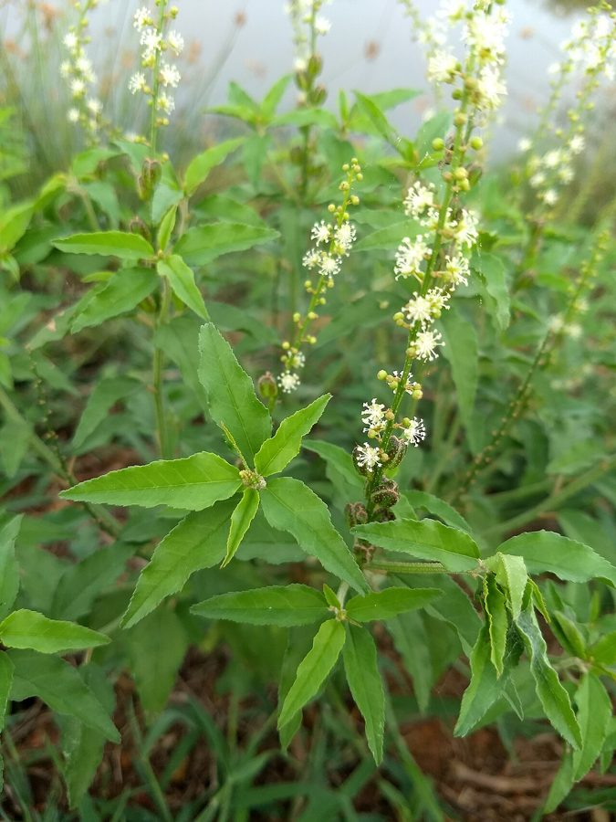

बन तुलसीBan Tulsi
Croton bonplandianus · Euphorbiaceae · FLR-0060

- Scientific name
- Croton bonplandianus Baill.
- Family
- Euphorbiaceae
- Hindi
- बन तुलसी
- Status here
- invasive
- IUCN
- not evaluated
When to look कब देखें
Present all year.
बन तुलसी / Ban Tulsi
Croton bonplandianus Baill. — Euphorbiaceae
बन तुलसी (बन-तुलसी या काला भांगरा) — उत्तर प्रदेश के सड़क के किनारों, रेलवे पटरियों, नदी के रेतीले किनारों और परती जमीनों पर बहुत तेजी से फैलने वाला एक आक्रामक विदेशी (South American) खरपतवार है। इसके पत्ते देखने में पवित्र तुलसी (Ocimum tenuiflorum) जैसे होते हैं और मसलने पर इनमें से तेज, अरुचिकर गंध आती है, जिसके कारण इसे 'बन तुलसी' (जंगली तुलसी) कहा जाता है। इसके डंठल हल्के लाल या हरे रंग के होते हैं और इसके शीर्ष पर छोटे, सफेद रंग के फूल आते हैं जो लंबे पुष्पगुच्छ (spikes) में व्यवस्थित होते हैं। इसके तने और पत्तियों को तोड़ने पर सफेद रंग का दूधिया लेटेक्स निकलता है जो विषैला होता है। यह मवेशियों द्वारा नहीं खाया जाता है, जिसके कारण यह देशी वनस्पतियों को विस्थापित कर तेजी से बंजर भूमियों पर अपना एकाधिकार स्थापित कर लेता है।
Quick Identification त्वरित पहचान
| Feature | Description |
|---|---|
| Form | Erect, branched, bushy annual or perennial herb (30–80 cm tall), covered in stellate (star-shaped) hairs |
| Leaves | Lanceolate or ovate-lanceolate leaves (3–7 cm long) with serrated margins, carrying two small glands at the leaf base |
| Flowers | Small, unisexual, whitish-yellow flowers arranged in terminal spikes; male flowers at the top, female at the base |
| Latex | Broken stems or petioles exude a watery, whitish-yellow milky sap (latex) |
| Fruits | Small, oblong, three-lobed capsule (3–4 mm long) containing three shiny, pitted seeds |
Field tip: Look for a branching, aromatic weed with lance-shaped serrated leaves that look like Tulsi. Snapping a stem releases a sticky milky sap, and the plant has a strong, unpleasant smell when crushed.
Morphology आकारिकी
Biometrics (typical measurements for wild specimens in Basti):
| Feature | Measurement |
|---|---|
| Plant height | 30–80 cm |
| Leaf length | 3–7 cm |
| Leaf width | 1.5–3 cm |
| Flower spike length | 5–15 cm |
| Seed dimensions | 3–4 mm |
Leaves: Leaves are simple, alternate, with wavy-serrate margins. They bear two tiny, stalked glands at the junction of the petiole and blade, which exude a sweet liquid attracting ants.
Latex & Sap: The latex contains toxic diterpenes, which cause skin irritation in humans and protect the plant from herbivores.
Flowers & Seeds: The inflorescence is an erect, terminal raceme. The seeds carry a small fleshy structure called a caruncle, which is rich in lipids and aids in dispersal by ants.
Vocalisations
Plants do not possess nervous systems or vocal organs and cannot produce sounds.
- Sound production: Silent; no sound production.
Behaviour & Ecology व्यवहार और पारिस्थितिकी
Croton bonplandianus is a highly aggressive colonizer of disturbed, sandy, and nutrient-poor soils. It has a high tolerance for drought and soil salinity. Because cattle and goats refuse to touch it due to its toxic sap, it experiences no grazing pressure, allowing it to rapidly crowd out native grasses and herbs.
Life Cycle / Phenology जीवन चक्र
- Germination: Seeds germinate in large numbers after the first monsoon rains (June–July).
- Flowering & Fruiting: Occurs year-round, peaking from September to January.
- Dispersal: The ripe capsules explode when dry, throwing seeds up to a meter away. Ants then carry the seeds to their nests (myrmecochory) to eat the lipid-rich caruncle, dispersing them further.
Associated Species / Interactions सहजीवी संबंध
- Ants: Solenopsis (
[INS-0039 Tropical Fire Ant]) and other ants visit the leaf-base glands to feed on nectar, providing defense against other plant-eating insects. - Pollinators: Small flies and solitary bees visit the tiny white flowers for pollen.
Predators / Natural Enemies शत्रु
- Fungi: Leaf spot fungi occasionally attack the foliage during wet monsoon months.
- Mammals: Strictly avoided by goats, sheep, cows, and nilgai (
[MAM-0011 Nilgai]) due to toxic latex.
Agricultural / Human Relevance कृषि प्रासंगिकता
Aggressive invader and crop contaminant.
- Agricultural Impact: It is a major weed of winter crops (Rabi fields) and orchards in Basti. It competes with crops for water, light, and nutrients.
- Allelopathy: The decaying leaves release chemicals into the soil that inhibit the germination of native crop seedlings.
- Eradication: Farmers manually uproot the weed before it sets seeds. The dried stalks are sometimes burned as fuel in villages, but the smoke can be irritating to the eyes.
- Folk Medicine: Despite its toxicity, some local traditional healers apply the leaves' milky sap to treat minor cuts (not clinically validated; skin irritation is common).
Expected Locally स्थानीय रूप से अपेक्षित
Not a field record. Written from published accounts for eastern Uttar Pradesh. No confirmed local sighting yet — if you have seen it, that is what the atlas needs.
अभी तक स्थानीय पुष्टि नहीं। यह विवरण प्रकाशित स्रोतों से है, किसी अवलोकन से नहीं।
Widespread across Basti district, particularly along the dry banks of the Ghaghra river and sandy edges of the railway tracks in Basti town, Govindnagar, and Babhnan blocks. It forms mono-specific stands on fallow land, turning large patches of land into green scrub where no cattle graze.
Distribution वितरण
Global range: Native to southern South America (Argentina, Paraguay, Brazil). It has invaded South and Southeast Asia, including India, Pakistan, and Bangladesh.
In India: Widespread across the plains, particularly in dry, sandy, and waste grounds.
In Uttar Pradesh: Abundant along all railway lines, highways, and river basins.
In Basti district / eastern UP: Invasive resident; extremely common.
Research Questions शोध प्रश्न
- How does the presence of Croton bonplandianus affect the species diversity of native annual grasses in Basti's fallow fields?
- Do the leaf-base glands of Croton bonplandianus attract different ant species in rural fields compared to urban railway tracks?
- Can a child safely observe ants visiting the base of a Ban Tulsi leaf without snapping the leaf and touching the milky sap? — A simple insect-plant interaction activity.
- Does the aqueous extract of Croton bonplandianus leaves suppress the germination of wheat seeds under laboratory conditions? / क्या बन तुलसी के पत्तों का जलीय अर्क प्रयोगशाला स्थितियों में गेहूं के बीजों के अंकुरण को रोकता है?
- What are the most effective non-chemical methods used by local farmers in Basti to clear dense infestations of Ban Tulsi? / बस्ती में बन तुलसी के घने प्रकोप को साफ करने के लिए स्थानीय किसानों द्वारा उपयोग की जाने वाली सबसे प्रभावी गैर-रासायनिक विधियां कौन सी हैं?
Similar Species मिलती-जुलती प्रजातियाँ
| Species | Key Difference | हिंदी |
|---|---|---|
Ocimum tenuiflorum (Tulsi [FLR-0008]) | Non-toxic; exudes no latex; leaves are highly fragrant (clove/mint scent); flowers are purple, tubular; highly sacred. | तुलसी — दूधिया रस रहित, सुगंधित पत्ते, बैंगनी फूल |
| Croton sparsiflorus (synonym) | Identical plant; older taxonomic books use this name. | बन तुलसी — समान पौधा (पर्यायवाची नाम) |
| Acalypha indica (Indian Acalypha) | Stems lack milky latex; leaves are rhomboid-ovate; female flowers are held in cup-like leafy bracts. | कुप्पी / अहरित — बिना दूध वाले तने, कप जैसे कोष्ठ |
Taxonomy & Classification वर्गीकरण
Original description. The French botanist Henri Ernest Baillon described the species as Croton bonplandianus in 1864 in Adansonia (Vol. 4, p. 339). The type locality was South America. The genus name Croton is derived from the Greek kroton (tick), referring to the seed's resemblance to a tick insect. The specific epithet bonplandianus honors the French explorer and botanist Aimé Bonpland.
Subspecies. Monotypic.
Family and order placement. Placed in the order Malpighiales, family Euphorbiaceae, subfamily Crotonoideae, tribe Crotoneae.
Phylogenetic notes. A highly diverse genus containing over 1,200 species, with C. bonplandianus belonging to the section Adenophylla.
IUCN status rationale. Not evaluated (NE) by the IUCN Red List. As an aggressively spreading global weed under no threat of extinction, it requires no conservation measures.
Photo Gallery फोटो गैलरी
References संदर्भ
- Baillon, H.E. (1864). Adansonia; recueil d'observations botaniques. Paris, Vol. 4, p. 339. [original description]
- Hooker, J.D. (1887). Flora of British India. L. Reeve & Co., London, Vol. 5, p. 385. [as Croton sparsiflorus]
- Maheshwari, J.K. (1963). The Flora of Delhi. CSIR, New Delhi. [notes on its invasive expansion in India]
- Botanical Survey of India. Flora of Uttar Pradesh. BSI, Kolkata.
- Sinha, S. & Sharma, A. (2012). Allelopathic effects of Croton bonplandianus on crop plants. Journal of Weed Science, 44(2), 115–118.
- GBIF Occurrence Data — Croton bonplandianus (2026). GBIF taxon key: 3058543.
Source file: species/flora/weeds/ban_tulsi.md